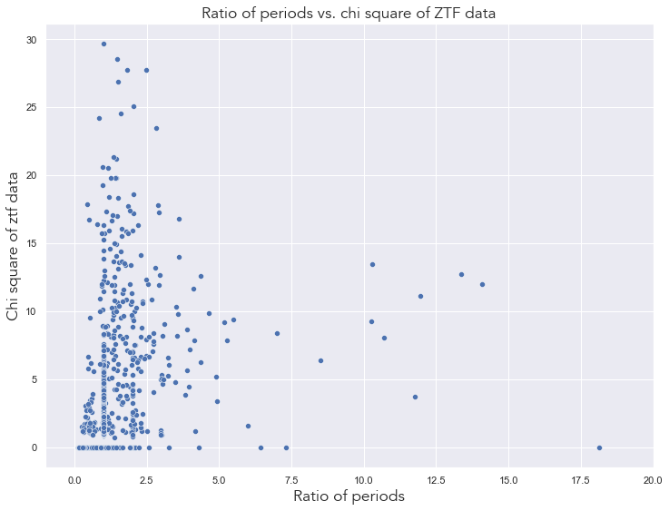
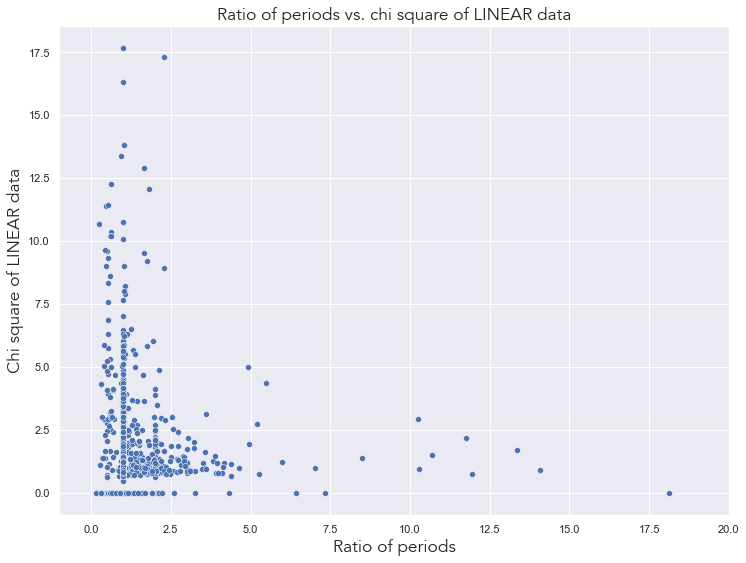
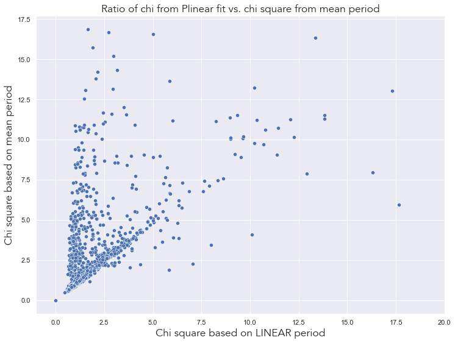
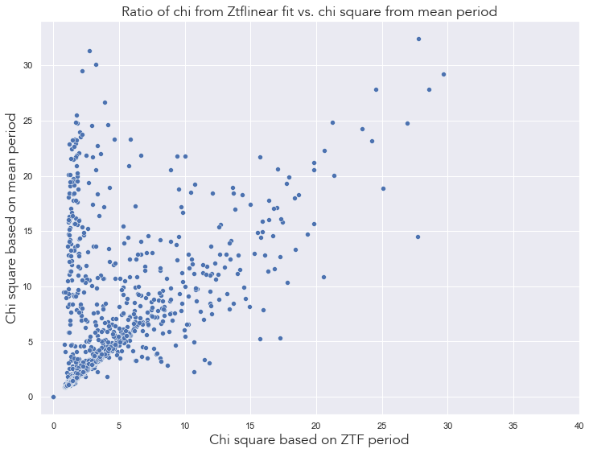
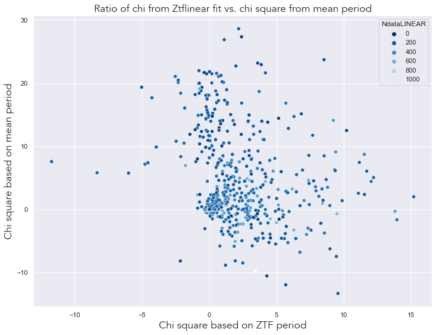
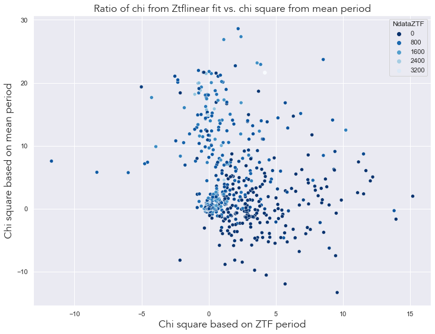

Code
%load_ext autoreload
%autoreload 2%load_ext autoreload
%autoreload 2In this notebook we are analyzing the data calculated in nb 03 in order to look into possible Blazhko stars.
# IMPORTING LIBRARIES
# --------------------
# AstroML & Astropy
from astroML.datasets import fetch_LINEAR_sample
from astropy.timeseries import LombScargle
from astroML.datasets import fetch_LINEAR_sample
from astroML.datasets import fetch_LINEAR_geneva
from astropy.timeseries import TimeSeries
from astropy.table import Table
from astroML.time_series import MultiTermFit
# ZTF
from ztfquery import lightcurve
# Basic libraries
import random
import pickle
import os
import sys
from tqdm import tqdm
# Plotting
import seaborn as sns
from matplotlib import pyplot as plt
from matplotlib import ticker
import matplotlib.colors as mcolors
from matplotlib.font_manager import FontProperties
import ipywidgets as widgets
from IPython.display import display
# DataFrame analysis
import pandas as pd
import dask.dataframe as dd
# Math libraries
import numpy as np
import scipy as sc
from scipy.stats import norm
from scipy.signal import find_peaks
from array import array# CONFIG
sns.set_theme() # setting the theme for plotting
np.random.seed(42)
colors = ['#1A090D', '#D8C99B', '#D8973C', '#BD632F', '#273E47']
cmap = mcolors.ListedColormap(colors)
font = FontProperties()
font.set_family('avenir')
font.set_name('Avenir')
font.set_style('normal')
font.set_size('xx-large')
%matplotlib inline # Importing custom libraries
# ----------------------------
sys.path.insert(0,'../src/')
from config import*
from descriptive_stats import *
from plots import *
from selection import *
from lc_analysis import *Loading the data!# DATA
data = fetch_LINEAR_sample(data_home='../inputs') # fetching the data from astroML data libraryAfter finishing the preliminary setup, it’s time to load the fit data, periodograms and light curve data.
lightcurve_analysis = pd.read_csv('../outputs/LC_ANALYSIS_FINAL.csv')
lightcurve_analysis.head()| LINEAR id | Plinear | Pztf | Pmean | Pratio | NdataLINEAR | LPlin_rmsdmag | LPlin_chi2dof | LPlin_chi2dofR | LPmean_rmsdmag | ... | ZPztf_chi2dofR | ZPmean_rmsdmag | ZPmean_chi2dof | ZPmean_chi2dofR | Zmmax | Zampl | Lindicator | Llimit | Zindicator | Zlimit | |
|---|---|---|---|---|---|---|---|---|---|---|---|---|---|---|---|---|---|---|---|---|---|
| 0 | 29848 | 0.557021 | 0.557037 | 0.557029 | 1.000028 | 301.0 | 0.178198 | 3.028026 | 1.451336 | 0.185326 | ... | 3.645075 | 0.052598 | 16.195588 | 3.955532 | 15.756993 | 0.925157 | 0 | 0.25 | 0.0 | 0.25 |
| 1 | 50402 | 0.643301 | 0.643296 | 0.643298 | 0.999992 | 284.0 | 0.107683 | 0.595738 | 0.733869 | 0.106092 | ... | 1.162370 | 0.031558 | 2.097207 | 1.177316 | 16.088901 | 0.486372 | 0 | 0.25 | 0.0 | 0.25 |
| 2 | 62892 | 0.530776 | 0.530785 | 0.530781 | 1.000017 | 276.0 | 0.108544 | 1.058829 | 0.934727 | 0.114002 | ... | 3.137436 | 0.069562 | 19.794606 | 3.288505 | 15.961735 | 0.641651 | 1 | 0.25 | 0.0 | 0.25 |
| 3 | 91437 | 0.674732 | 0.674738 | 0.674735 | 1.000009 | 177.0 | 0.040798 | 2.775415 | 1.352923 | 0.040888 | ... | 1.556614 | 0.020152 | 4.243845 | 1.580792 | 15.002323 | 0.864724 | 0 | 0.25 | 0.0 | 0.25 |
| 4 | 95250 | 0.313870 | 0.313876 | 0.313873 | 1.000019 | 222.0 | 0.162040 | 0.816590 | 0.859616 | 0.165801 | ... | 1.341415 | 0.054686 | 3.709448 | 1.515406 | 16.680144 | 0.461509 | 1 | 0.25 | 0.0 | 0.25 |
5 rows × 27 columns
periodograms = pickle.load(open("../outputs/periodograms_final.pkl", "rb"))FITS = np.load('../outputs/fits_whole.npy', allow_pickle=True)plt.figure(figsize=(12,9))
sns.scatterplot(lightcurve_analysis, x='Pratio', y='ZPztf_chi2dofR')
plt.xlim(-1, 20)
plt.title('Ratio of periods vs. chi square of ztf data', fontproperties=font)
plt.xlabel('Ratio of periods', fontproperties=font)
plt.ylabel('Chi square of ztf data', fontproperties=font)
plt.show()
From the graph above we can see that most ratios of periods focus around the 1 mark, with chi quare values increasing along that line. There is another line present which indicates 0 chi square and increasing ratio of periods. The rest of the data is scattered on the graph.
plt.figure(figsize=(12,9))
sns.scatterplot(lightcurve_analysis, x='Pratio', y='LPlin_chi2dofR')
plt.xlim(-1, 20)
plt.title('Ratio of periods vs. chi square of LINEAR data', fontproperties=font)
plt.xlabel('Ratio of periods', fontproperties=font)
plt.ylabel('Chi square of LINEAR data', fontproperties=font)
plt.show()
From the graph above, we can see the same pattern as with the ZTF data, showing that they are actually quite similar. However, more ratios of periods are scattered near the lower end of the graph (smaller chi values).
plt.figure(figsize=(12,9))
sns.scatterplot(lightcurve_analysis, x='LPlin_chi2dofR', y='LPmean_chi2dofR')
plt.xlim(-1, 20)
plt.title('Ratio of chi from Plinear fit vs. chi square from mean period', fontproperties=font)
plt.xlabel('Chi square based on LINEAR period', fontproperties=font)
plt.ylabel('Chi square based on mean period', fontproperties=font)
plt.show()
As expected, most values fall on a diagonal line indicating that they should be the same, however a sizeable fraction isn’t the same as the mean value, indicating that the ZTF period is pushing the mean towards a different direction than the original LINEAR period.
plt.figure(figsize=(12,9))
sns.scatterplot(lightcurve_analysis, x='ZPztf_chi2dofR', y='ZPmean_chi2dofR')
plt.xlim(-1, 40)
plt.title('Ratio of chi from Ztflinear fit vs. chi square from mean period', fontproperties=font)
plt.xlabel('Chi square based on ZTF period', fontproperties=font)
plt.ylabel('Chi square based on mean period', fontproperties=font)
plt.show()
From the graph above we can also see a diagonal line indicating equality, however the data is slightly more scattered than in the LINEAR graph.
lightcurve_analysis['Chi_diff_LINEAR'] = lightcurve_analysis['LPmean_chi2dofR'] - lightcurve_analysis['LPlin_chi2dofR'] lightcurve_analysis['Chi_diff_ZTF'] = lightcurve_analysis['ZPmean_chi2dofR'] - lightcurve_analysis['ZPztf_chi2dofR'] lightcurve_analysis.head()| LINEAR id | Plinear | Pztf | Pmean | Pratio | NdataLINEAR | LPlin_rmsdmag | LPlin_chi2dof | LPlin_chi2dofR | LPmean_rmsdmag | ... | ZPmean_chi2dof | ZPmean_chi2dofR | Zmmax | Zampl | Lindicator | Llimit | Zindicator | Zlimit | Chi_diff_LINEAR | Chi_diff_ZTF | |
|---|---|---|---|---|---|---|---|---|---|---|---|---|---|---|---|---|---|---|---|---|---|
| 0 | 29848 | 0.557021 | 0.557037 | 0.557029 | 1.000028 | 301.0 | 0.178198 | 3.028026 | 1.451336 | 0.185326 | ... | 16.195588 | 3.955532 | 15.756993 | 0.925157 | 0 | 0.25 | 0.0 | 0.25 | 0.159324 | 0.310458 |
| 1 | 50402 | 0.643301 | 0.643296 | 0.643298 | 0.999992 | 284.0 | 0.107683 | 0.595738 | 0.733869 | 0.106092 | ... | 2.097207 | 1.177316 | 16.088901 | 0.486372 | 0 | 0.25 | 0.0 | 0.25 | 0.008459 | 0.014946 |
| 2 | 62892 | 0.530776 | 0.530785 | 0.530781 | 1.000017 | 276.0 | 0.108544 | 1.058829 | 0.934727 | 0.114002 | ... | 19.794606 | 3.288505 | 15.961735 | 0.641651 | 1 | 0.25 | 0.0 | 0.25 | 0.028766 | 0.151069 |
| 3 | 91437 | 0.674732 | 0.674738 | 0.674735 | 1.000009 | 177.0 | 0.040798 | 2.775415 | 1.352923 | 0.040888 | ... | 4.243845 | 1.580792 | 15.002323 | 0.864724 | 0 | 0.25 | 0.0 | 0.25 | 0.008148 | 0.024178 |
| 4 | 95250 | 0.313870 | 0.313876 | 0.313873 | 1.000019 | 222.0 | 0.162040 | 0.816590 | 0.859616 | 0.165801 | ... | 3.709448 | 1.515406 | 16.680144 | 0.461509 | 1 | 0.25 | 0.0 | 0.25 | 0.005548 | 0.173992 |
5 rows × 29 columns
plt.figure(figsize=(12,9))
sns.scatterplot(lightcurve_analysis, x='Chi_diff_LINEAR', y='Chi_diff_ZTF', hue='NdataLINEAR', palette='Blues_r')
#plt.xlim(-1, 40)
plt.title('Ratio of chi from Ztflinear fit vs. chi square from mean period', fontproperties=font)
plt.xlabel('Chi square based on ZTF period', fontproperties=font)
plt.ylabel('Chi square based on mean period', fontproperties=font)
plt.show()
plt.figure(figsize=(12,9))
sns.scatterplot(lightcurve_analysis, x='Chi_diff_LINEAR', y='Chi_diff_ZTF', hue='NdataZTF', palette='Blues_r')
#plt.xlim(-1, 40)
plt.title('Ratio of chi from Ztflinear fit vs. chi square from mean period', fontproperties=font)
plt.xlabel('Chi square based on ZTF period', fontproperties=font)
plt.ylabel('Chi square based on mean period', fontproperties=font)
plt.show()
Based on these graphs, we can cut all light curves which have less than 40 datapoints, so that we can work with a cleaner sample.
lightcurve_analysis = lightcurve_analysis.loc[(lightcurve_analysis['NdataLINEAR'] > 40) | (lightcurve_analysis['NdataZTF'] > 40)]lightcurve_analysis['Pratio'] = round(lightcurve_analysis['Pratio'], 4)
lightcurve_analysis['Ampl_diff'] = round(abs(lightcurve_analysis['Lampl'] - lightcurve_analysis['Zampl']), 3)
lightcurve_analysis.head()| LINEAR id | Plinear | Pztf | Pmean | Pratio | NdataLINEAR | LPlin_rmsdmag | LPlin_chi2dof | LPlin_chi2dofR | LPmean_rmsdmag | ... | ZPmean_chi2dofR | Zmmax | Zampl | Lindicator | Llimit | Zindicator | Zlimit | Chi_diff_LINEAR | Chi_diff_ZTF | Ampl_diff | |
|---|---|---|---|---|---|---|---|---|---|---|---|---|---|---|---|---|---|---|---|---|---|
| 0 | 29848 | 0.557021 | 0.557037 | 0.557029 | 1.0 | 301.0 | 0.178198 | 3.028026 | 1.451336 | 0.185326 | ... | 3.955532 | 15.756993 | 0.925157 | 0 | 0.25 | 0.0 | 0.25 | 0.159324 | 0.310458 | 0.358 |
| 1 | 50402 | 0.643301 | 0.643296 | 0.643298 | 1.0 | 284.0 | 0.107683 | 0.595738 | 0.733869 | 0.106092 | ... | 1.177316 | 16.088901 | 0.486372 | 0 | 0.25 | 0.0 | 0.25 | 0.008459 | 0.014946 | 0.001 |
| 2 | 62892 | 0.530776 | 0.530785 | 0.530781 | 1.0 | 276.0 | 0.108544 | 1.058829 | 0.934727 | 0.114002 | ... | 3.288505 | 15.961735 | 0.641651 | 1 | 0.25 | 0.0 | 0.25 | 0.028766 | 0.151069 | 0.017 |
| 3 | 91437 | 0.674732 | 0.674738 | 0.674735 | 1.0 | 177.0 | 0.040798 | 2.775415 | 1.352923 | 0.040888 | ... | 1.580792 | 15.002323 | 0.864724 | 0 | 0.25 | 0.0 | 0.25 | 0.008148 | 0.024178 | 0.004 |
| 4 | 95250 | 0.313870 | 0.313876 | 0.313873 | 1.0 | 222.0 | 0.162040 | 0.816590 | 0.859616 | 0.165801 | ... | 1.515406 | 16.680144 | 0.461509 | 1 | 0.25 | 0.0 | 0.25 | 0.005548 | 0.173992 | 0.022 |
5 rows × 30 columns
lightcurve_analysis.head()| LINEAR id | Plinear | Pztf | Pmean | Pratio | NdataLINEAR | LPlin_rmsdmag | LPlin_chi2dof | LPlin_chi2dofR | LPmean_rmsdmag | ... | ZPmean_chi2dof | ZPmean_chi2dofR | Zmmax | Zampl | Lindicator | Llimit | Zindicator | Zlimit | Chi_diff_LINEAR | Chi_diff_ZTF | |
|---|---|---|---|---|---|---|---|---|---|---|---|---|---|---|---|---|---|---|---|---|---|
| 0 | 29848 | 0.557021 | 0.557037 | 0.557029 | 1.000028 | 301.0 | 0.178198 | 3.028026 | 1.451336 | 0.185326 | ... | 16.195588 | 3.955532 | 15.756993 | 0.925157 | 0 | 0.25 | 0.0 | 0.25 | 0.159324 | 0.310458 |
| 1 | 50402 | 0.643301 | 0.643296 | 0.643298 | 0.999992 | 284.0 | 0.107683 | 0.595738 | 0.733869 | 0.106092 | ... | 2.097207 | 1.177316 | 16.088901 | 0.486372 | 0 | 0.25 | 0.0 | 0.25 | 0.008459 | 0.014946 |
| 2 | 62892 | 0.530776 | 0.530785 | 0.530781 | 1.000017 | 276.0 | 0.108544 | 1.058829 | 0.934727 | 0.114002 | ... | 19.794606 | 3.288505 | 15.961735 | 0.641651 | 1 | 0.25 | 0.0 | 0.25 | 0.028766 | 0.151069 |
| 3 | 91437 | 0.674732 | 0.674738 | 0.674735 | 1.000009 | 177.0 | 0.040798 | 2.775415 | 1.352923 | 0.040888 | ... | 4.243845 | 1.580792 | 15.002323 | 0.864724 | 0 | 0.25 | 0.0 | 0.25 | 0.008148 | 0.024178 |
| 4 | 95250 | 0.313870 | 0.313876 | 0.313873 | 1.000019 | 222.0 | 0.162040 | 0.816590 | 0.859616 | 0.165801 | ... | 3.709448 | 1.515406 | 16.680144 | 0.461509 | 1 | 0.25 | 0.0 | 0.25 | 0.005548 | 0.173992 |
5 rows × 29 columns
print(lightcurve_analysis.shape)(2516, 29)We have effectively removed 194 stars from our dataset due to the insufficient amount of data. We can now proceed on to further analysis.
The next step is to create a dataset where at least one of the many criteria for Blazhko stars is met.
The parameters:
Ratio of Periods: must be below 0.99 and above 1.01 (when rounded to 2 decimals).
Chi square: has to be above 3 for a significant change for the Blazhko effect.
Indicator from periodogram: Zindicator and Lindicator should be 1 (however in other situations one or the either can be 1).
Amplitude: if the amplitude change is greater than 0.01.
# DATAFRAME for storing Blazhko candidates
BLAZHKO_STARS = pd.DataFrame(())# PARAMETER VALUES
chi = 3.0
pratio_less = 0.99
pratio_more = 1.01
ampl = 0.01lightcurve_criterium = lightcurve_analysis.loc[((lightcurve_analysis['LPlin_chi2dofR'] > chi) &
(lightcurve_analysis['ZPztf_chi2dofR'] >chi)) |
((lightcurve_analysis['Pratio'] > pratio_less) |
(lightcurve_analysis['Pratio'] < pratio_more)) |
(lightcurve_analysis['Lindicator'] ==1) |
(lightcurve_analysis['Zindicator'] ==1) |
(lightcurve_analysis['Ampl_diff'] > ampl)
]
print(f'This dataset has {lightcurve_criterium.shape[0]} rows and {lightcurve_criterium.shape[1]} columns.')
lightcurve_criterium.head()This dataset has 2516 rows and 30 columns.| LINEAR id | Plinear | Pztf | Pmean | Pratio | NdataLINEAR | LPlin_rmsdmag | LPlin_chi2dof | LPlin_chi2dofR | LPmean_rmsdmag | ... | ZPmean_chi2dofR | Zmmax | Zampl | Lindicator | Llimit | Zindicator | Zlimit | Chi_diff_LINEAR | Chi_diff_ZTF | Ampl_diff | |
|---|---|---|---|---|---|---|---|---|---|---|---|---|---|---|---|---|---|---|---|---|---|
| 0 | 29848 | 0.557021 | 0.557037 | 0.557029 | 1.0 | 301.0 | 0.178198 | 3.028026 | 1.451336 | 0.185326 | ... | 3.955532 | 15.756993 | 0.925157 | 0 | 0.25 | 0.0 | 0.25 | 0.159324 | 0.310458 | 0.358 |
| 1 | 50402 | 0.643301 | 0.643296 | 0.643298 | 1.0 | 284.0 | 0.107683 | 0.595738 | 0.733869 | 0.106092 | ... | 1.177316 | 16.088901 | 0.486372 | 0 | 0.25 | 0.0 | 0.25 | 0.008459 | 0.014946 | 0.001 |
| 2 | 62892 | 0.530776 | 0.530785 | 0.530781 | 1.0 | 276.0 | 0.108544 | 1.058829 | 0.934727 | 0.114002 | ... | 3.288505 | 15.961735 | 0.641651 | 1 | 0.25 | 0.0 | 0.25 | 0.028766 | 0.151069 | 0.017 |
| 3 | 91437 | 0.674732 | 0.674738 | 0.674735 | 1.0 | 177.0 | 0.040798 | 2.775415 | 1.352923 | 0.040888 | ... | 1.580792 | 15.002323 | 0.864724 | 0 | 0.25 | 0.0 | 0.25 | 0.008148 | 0.024178 | 0.004 |
| 4 | 95250 | 0.313870 | 0.313876 | 0.313873 | 1.0 | 222.0 | 0.162040 | 0.816590 | 0.859616 | 0.165801 | ... | 1.515406 | 16.680144 | 0.461509 | 1 | 0.25 | 0.0 | 0.25 | 0.005548 | 0.173992 | 0.022 |
5 rows × 30 columns
It turns out that all of our light curves exhibit at least one of these factors! This means that it is necessary to go through each light curve, one by one, and decide wether it goes into the Blazhko pile or not.
w = widgets.ToggleButton(
value=False,
description='Click me',
disabled=False,
button_style='', # 'success', 'info', 'warning', 'danger' or ''
tooltip='Description',
icon='check' # (FontAwesome names without the `fa-` prefix)
)
display(w)